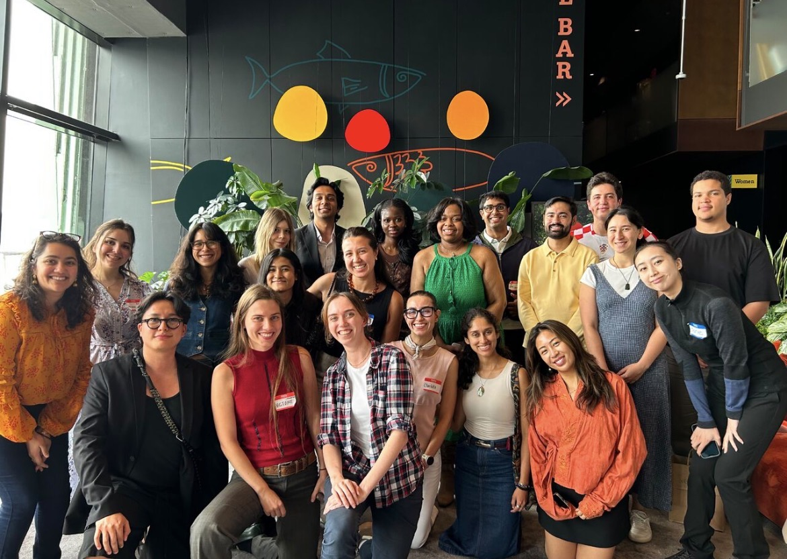

Brooklyn Hub.
A network of young Brooklynites taking action and improving our community — one of 508 Global Shapers hubs worldwide, initiated by the World Economic Forum.

What is Global Shapers?
The Global Shapers Community is an initiative of the World Economic Forum. The ecosystem of extraordinary young people under 30 was launched in 2011 in response to the absence of young peoples' voices in global decision-making. Shapers are exceptional in their potential, their achievements, and their drive to contribute to their communities through projects. We are diverse in demographics, geographies, and passions, but united by a common desire to shape the future and build a more peaceful and inclusive world. Shapers run non-profits, work in healthcare, tackle climate change, are creatives, and much more.
What we're working on
All projects →-
01

So Fresh So Clean
Brings mental health resources into salons, barbershops, and beauty spaces, with Mental Health First Aid kits for clients. Led by Seun, Jay & Naima.
-
02

Sow Rhythm Seed
Gardening and culture workshops honoring the legacy of Louis & Lucille Armstrong, with take-home kits to grow greener communities. Led by Cherise.
-
03

Link the Lunch
Partners with community fridges to get fresh meals where they're needed, cutting food waste and building mutual aid. Led by Ky'Naisha & Vanshika.
Want in?
We welcome new members each cohort — folks who contribute to an existing project, start a new one, or volunteer for 3+ meetups. We also welcome partners, funders, and neighbors at our events.